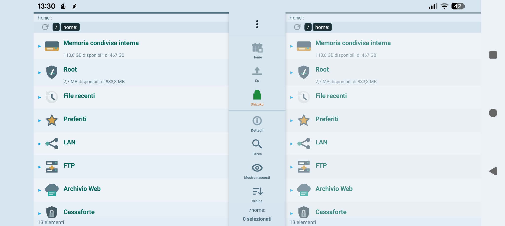
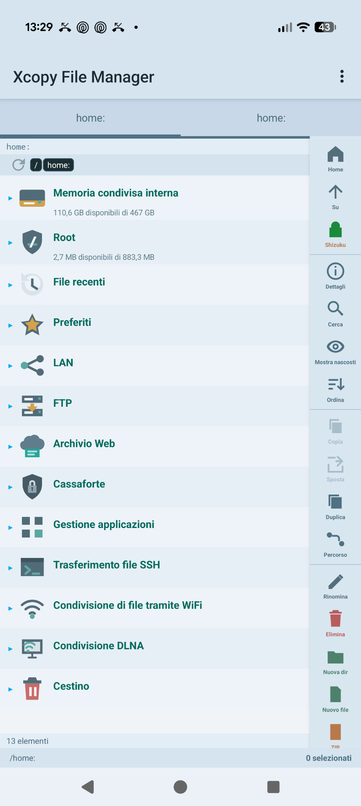
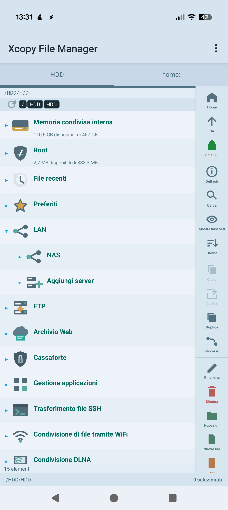
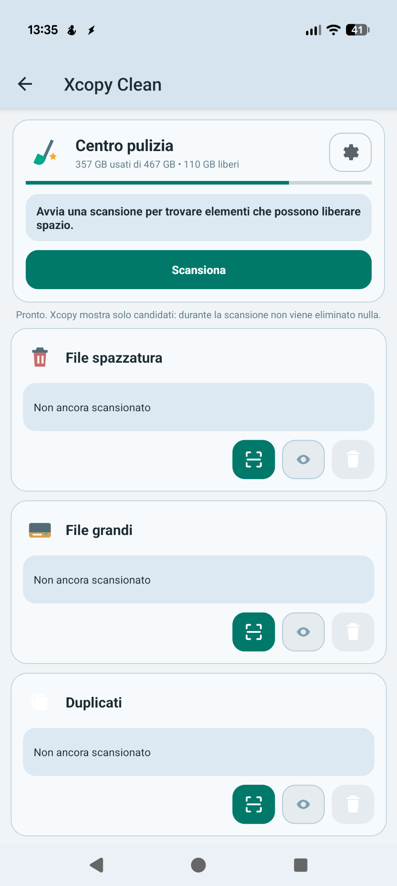
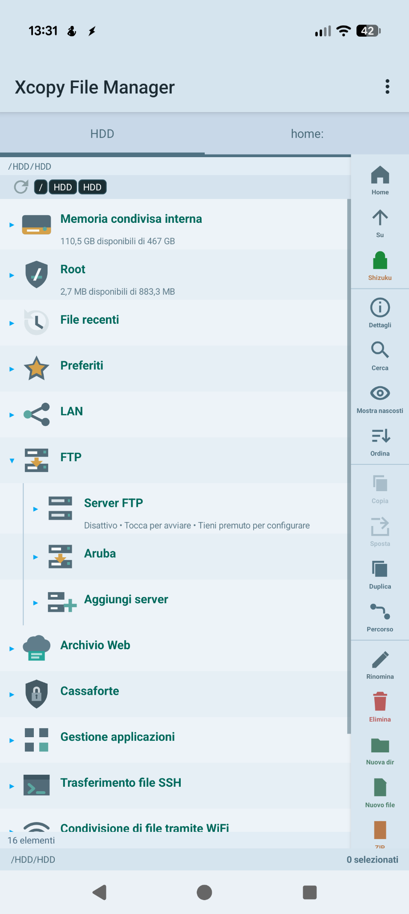
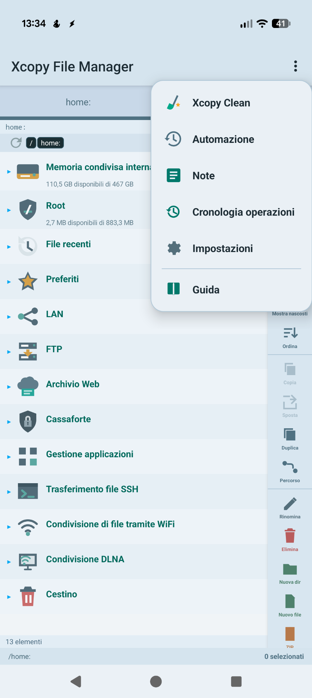

Xcopy
File Manager
A true dual-panel workspace for local files, USB drives, NAS, FTP, SFTP/SSH, WebDAV and Google Drive — with Time Machine, Xcopy Clean, automation, encrypted vaults and powerful built-in tools.
Un vero spazio di lavoro a doppio pannello per file locali, USB, NAS, FTP, SFTP/SSH, WebDAV e Google Drive — con Time Machine, Xcopy Clean, automazioni, cassaforti cifrate e potenti strumenti integrati.

Six clear areas, one consistent interface
Sei aree chiare, un'unica interfaccia coerente
Xcopy is organized around everyday file work, remote access, protection, recovery, cleanup and specialized tools.
Xcopy è organizzato attorno al lavoro quotidiano sui file, accesso remoto, protezione, recupero, pulizia e strumenti specializzati.
File management
Gestione file
Two independent panels, tree navigation, copy, move, rename, duplicate, delete, favorites, recent files and USB.
Due pannelli indipendenti, tree, copia, sposta, rinomina, duplica, elimina, preferiti, file recenti e USB.
Dual panelNetwork & cloud
Rete & cloud
SMB/NAS, FTP, SFTP/SSH, WebDAV and Google Drive follow the same navigation model as local storage.
SMB/NAS, FTP, SFTP/SSH, WebDAV e Google Drive seguono lo stesso modello delle memorie locali.
Remote storageSecurity
Sicurezza
Encrypted vaults, biometric access, protected credentials and encrypted manual settings backup.
Cassaforti cifrate, biometria, credenziali protette e backup manuale delle impostazioni cifrato.
VaultsTime Machine
Versioned protection for important folders, exclusions, restore workflows and operation safety.
Protezione versionata delle cartelle importanti, esclusioni, ripristino e sicurezza delle operazioni.
RecoveryXcopy Clean
Find junk, large files, true duplicates and media candidates before choosing what to remove.
Trova spazzatura, file grandi, duplicati reali e candidati multimediali prima di decidere cosa eliminare.
CleanupAdvanced tools
Strumenti avanzati
Archives, databases, EXIF, checksums, APK analysis, PDF, hex and specialized file inspection.
Archivi, database, EXIF, checksum, analisi APK, PDF, hex e ispezione specializzata dei file.
Power toolsA dual-panel workspace that stays out of your way
Un doppio pannello che resta sempre sotto controllo
Keep two locations open at once. Each panel remembers its own path, tree visibility, node order and configuration.
Tieni aperte due posizioni contemporaneamente. Ogni pannello ricorda percorso, visibilità del tree, ordine dei nodi e configurazione.

Local, network, cloud and tools share the same mental model.Locale, rete, cloud e strumenti seguono lo stesso modello.
Remote storage feels like another disk
Gli archivi remoti sembrano un altro disco
Open NAS and FTP nodes directly in the tree, then work with remote files through the same actions used locally.
Apri NAS e FTP direttamente nel tree e lavora sui file remoti con le stesse azioni usate in locale.

Saved network locations expand directly in the tree.Le posizioni di rete salvate si espandono direttamente nel tree.
Designed to reduce costly mistakes
Pensato per ridurre gli errori costosi
Xcopy combines several layers of protection instead of relying on a single “Are you sure?” dialog.
Xcopy combina più livelli di protezione invece di affidarsi a un solo dialog “Sei sicuro?”.
Operation history
Cronologia operazioni
Review file operations and undo supported actions when the previous state can be restored.
Rivedi le operazioni e annulla quelle supportate quando è possibile ripristinare lo stato precedente.
Trash
Cestino
Recover eligible deleted items instead of losing them immediately.
Recupera gli elementi eliminati idonei invece di perderli immediatamente.
Encrypted vaults
Cassaforti cifrate
Protect selected files with encrypted vaults, password changes and optional biometrics.
Proteggi file selezionati con cassaforti cifrate, cambio password e biometria opzionale.
Versioned protection for the folders that matter
Protezione versionata per le cartelle importanti
Time Machine adds a recovery-oriented layer above normal copy operations, with configuration, exclusions and restore-oriented workflows.
Time Machine aggiunge uno strato orientato al recupero sopra le normali operazioni di copia, con configurazione, esclusioni e flussi di ripristino.
Time Machine
A dedicated recovery layer for important folders. Screenshot slot ready for the real Time Machine UI.
Uno strato di recupero dedicato alle cartelle importanti. Spazio già pronto per lo screenshot reale di Time Machine.
Find what occupies space before deleting anything
Trova cosa occupa spazio prima di eliminare qualsiasi cosa
Xcopy Clean scans and presents candidates. Deletion remains a separate user decision.
Xcopy Clean scansiona e presenta i candidati. L'eliminazione resta una decisione separata dell'utente.

More than a file browser
Molto più di un semplice file browser
Open, inspect and work with specialized file formats without constantly jumping between apps.
Apri, ispeziona e lavora con formati specializzati senza passare continuamente da un'app all'altra.
Archive manager
Gestore archivi
ZIP, RAR and archive workflows, including remote files where supported.
SQLite / MDB
Database explorer/editor for supported SQLite and Microsoft Access files.
Explorer/editor database per SQLite e Microsoft Access supportati.
HEX Viewer / Editor
Inspect raw bytes for files that need low-level analysis.
Ispeziona i byte grezzi per file che richiedono analisi a basso livello.
PDF Viewer / Editor
Open and work with PDF documents directly inside Xcopy.
Apri e lavora con documenti PDF direttamente in Xcopy.
EXIF Editor
View and edit supported photo metadata.
Visualizza e modifica i metadati supportati delle foto.
Advanced checksum
Checksum avanzato
Calculate and verify hashes for integrity checks and duplicate workflows.
Calcola e verifica hash per integrità e gestione duplicati.
APK Analyzer
Inspect APK information and installed/application package details.
Analizza APK e dettagli dei pacchetti/app installate.
Media tools
Strumenti media
Image viewer, video playback and file-specific utilities.
Viewer immagini, riproduzione video e utilità specifiche per file.
A closer look, without oversized screenshots
Uno sguardo più da vicino, senza screenshot giganteschi


Need details? The complete guide is already online.
Ti servono dettagli? La guida completa è già online.
Browse feature-by-feature documentation for navigation, connections, vaults, automation, backup, advanced tools and troubleshooting.
Consulta la documentazione funzione per funzione per navigazione, connessioni, cassaforti, automazioni, backup, strumenti avanzati e risoluzione problemi.